Analisis Exploratorio de Datos (EDA)
Series de Tiempo de Precios
Evolucion historica de los precios de cierre para BTC, ETH y BNB en USD
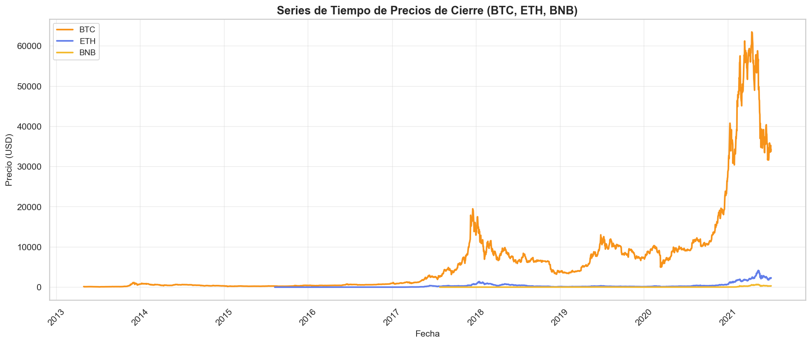
Precios Normalizados
Comparacion del crecimiento relativo de las monedas (base = 100 al inicio)
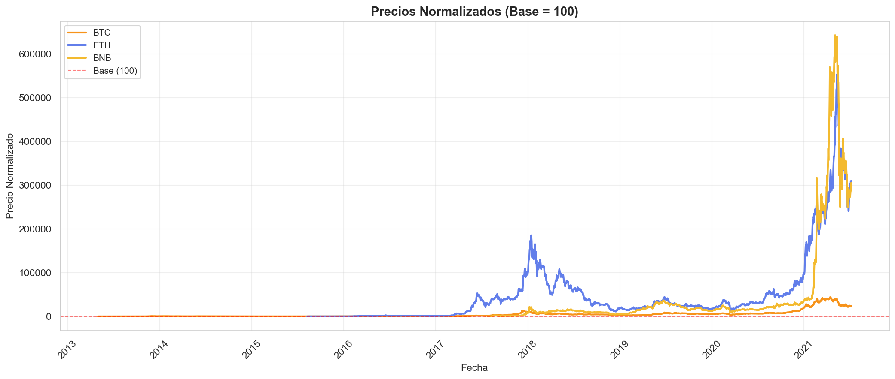
Distribucion de Retornos Diarios
Histogramas de retornos con distribucion normal superpuesta para identificar patrones
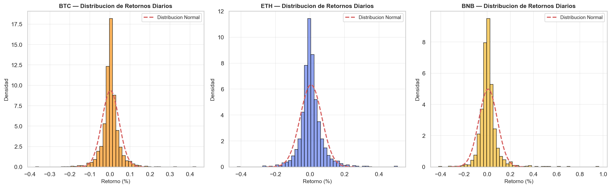
Matriz de Correlacion
Correlacion de Pearson entre retornos diarios de todas las criptomonedas
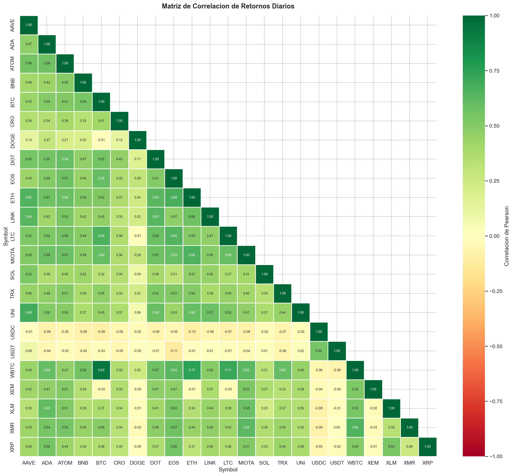
Analisis de Volumen de Trading
Volumen de transacciones en escala logaritmica para capturar variaciones amplias
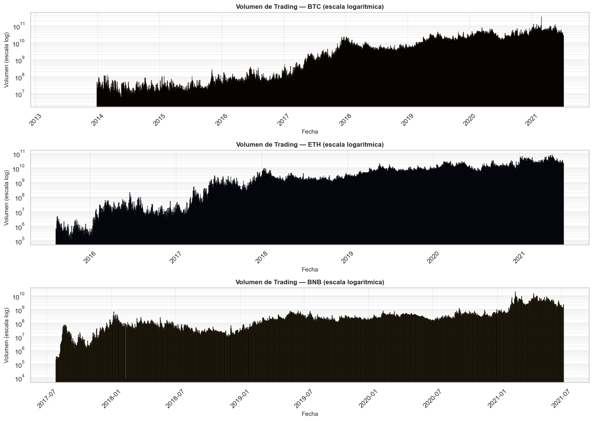
Rolling Volatility (30d y 90d)
Evolucion temporal de la volatilidad para identificar periodos de mayor riesgo
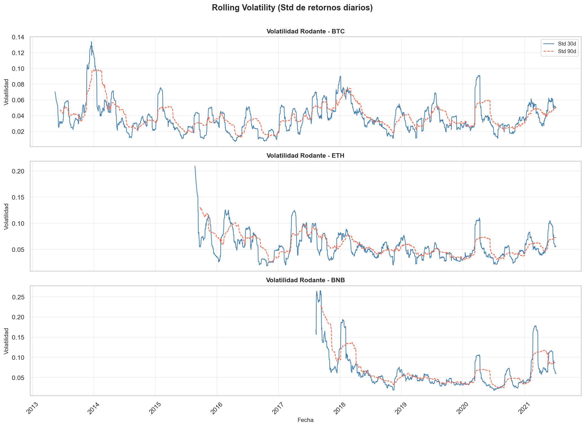
Seasonality Mensual
Retorno promedio por mes para detectar estacionalidad en BTC, ETH y BNB
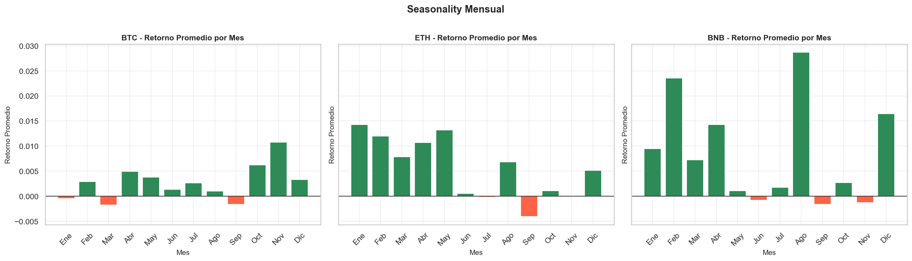
Seasonality por Dia de Semana
Retorno promedio por dia para evaluar patrones semanales de mercado
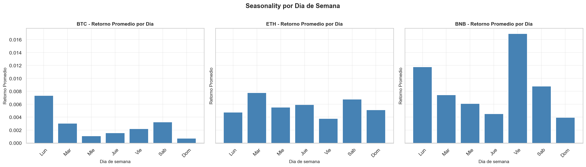
Deteccion de Outliers en Retornos BTC
Eventos extremos detectados con metodos Z-Score e IQR para analizar shocks de mercado
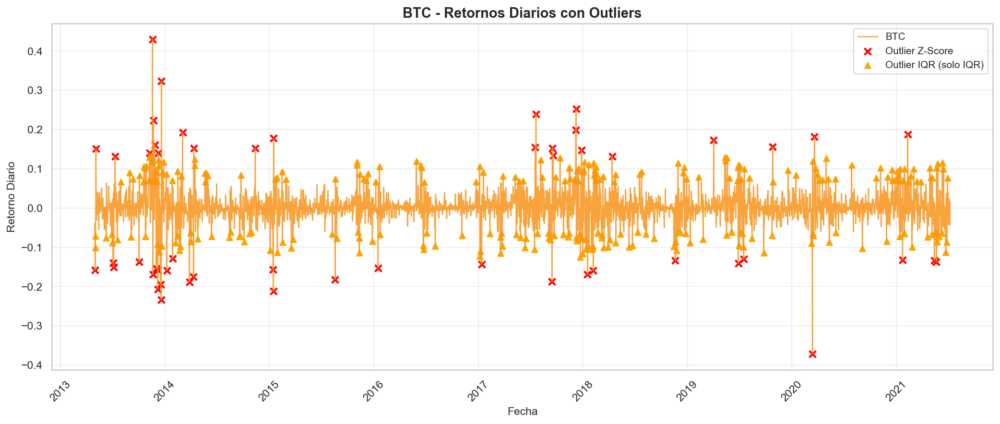
Resultados del Modelo No Supervisado
Seleccion de K
Comparacion de codo, silhouette y Davies-Bouldin para soportar la eleccion del K optimo
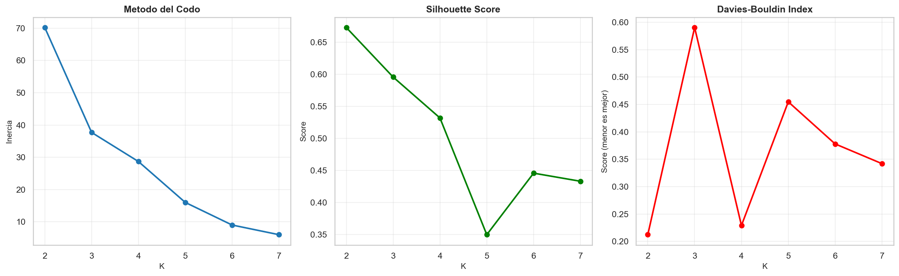
Visualizacion en Espacio PCA
Proyeccion 2D de clusters usando PCA (K-Means K2, K4, DBSCAN, Agglomerative)
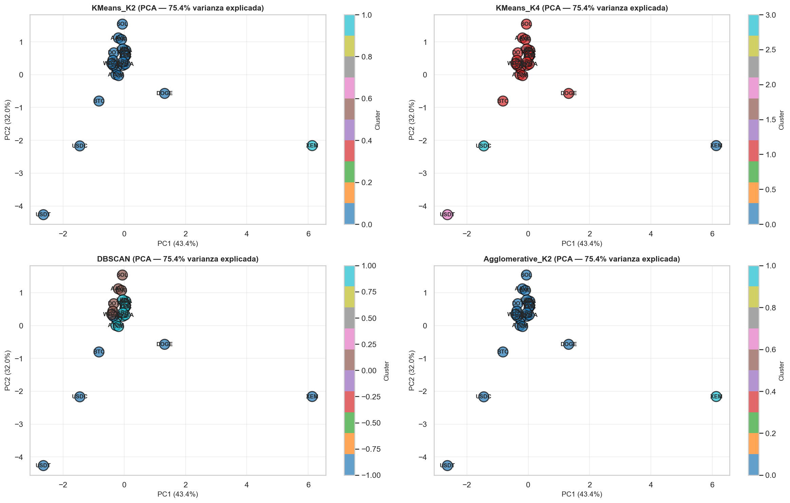
Heatmap de Features por Moneda
Features normalizadas organizadas por cluster K4 (volatility, sharpe ratio, etc)
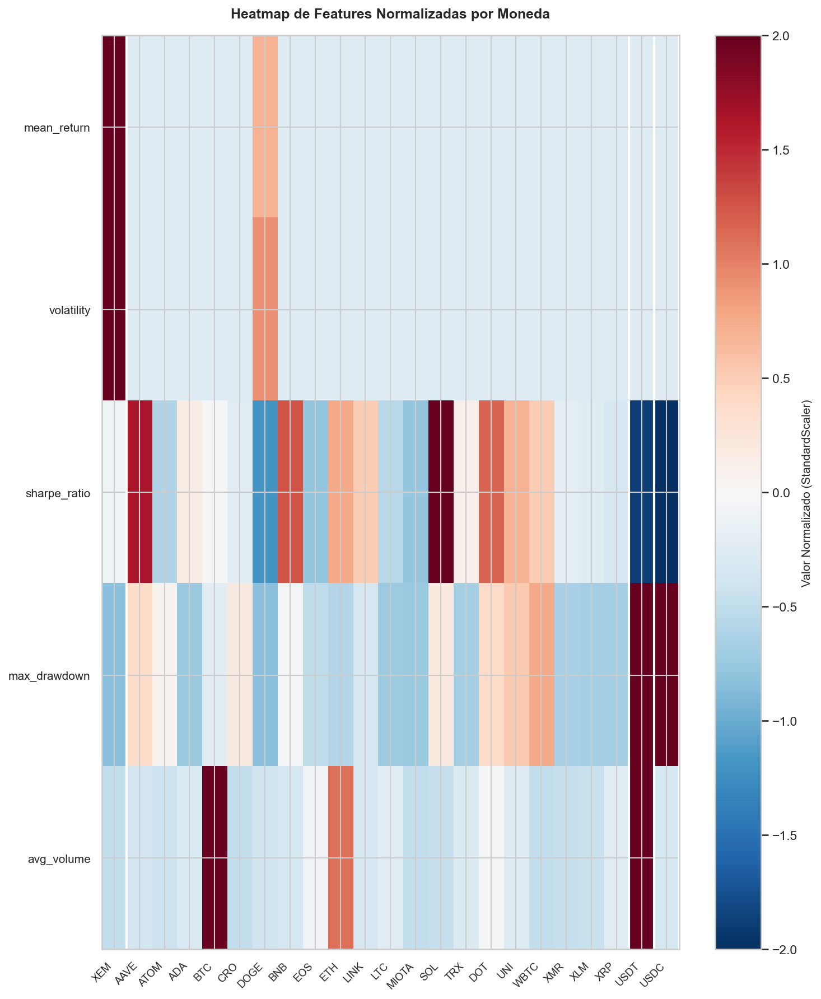
Estadisticas por Cluster
Distribucion de features para cada cluster usando boxplots (media, mediana, rango)
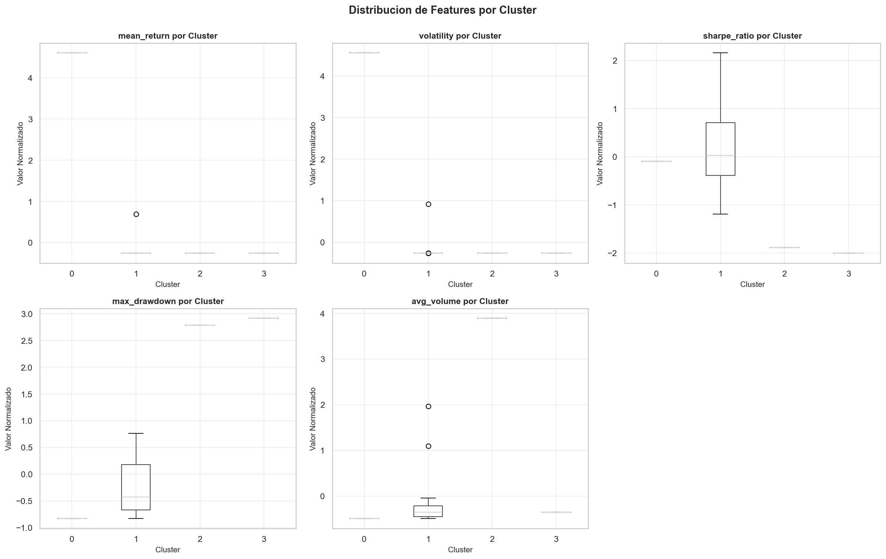